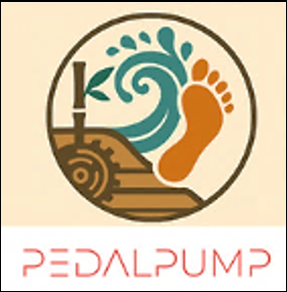
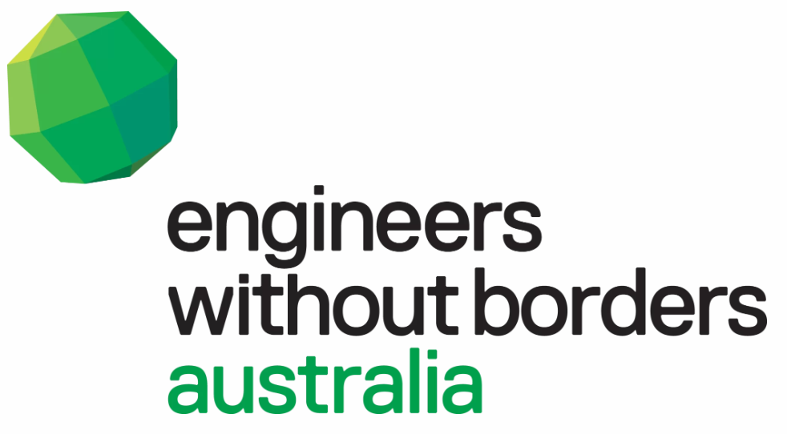
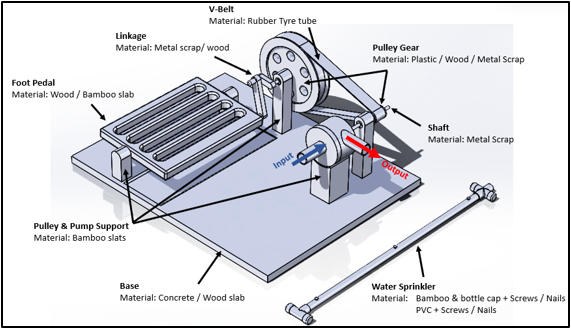
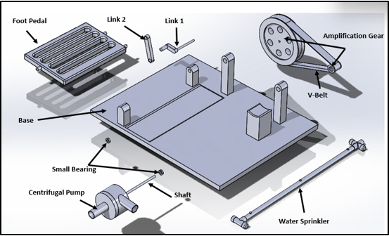
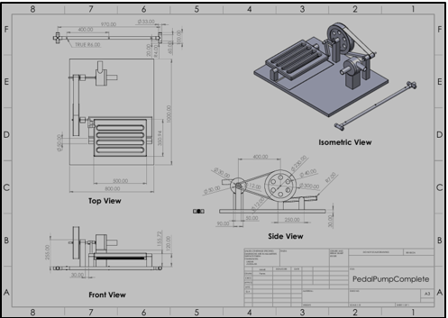
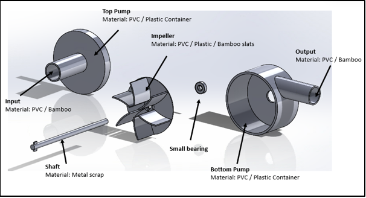

🌊 Empowering Loidahar
Foot-Powered Irrigation Pump for Loidahar Village, Timor-Leste
Group Pedal Pump | RMIT University | EWB Project

Project Overview
The Problem
- 70% of farmland is empty because there is no easy way to water crops.
- 3+ hours every day is spent carrying water by hand up steep hills.
- 678 farming families struggle to grow enough food to eat or sell.
🛠️ Our Solution
- Foot-powered pump: Works like a sewing machine treadle, easy to use while sitting.
- Compact & Portable: Small enough to fit in a standard bucket.
- Simple to build: No welding required, uses basic hand tools.
- Very cheap: Costs under $80 USD to build with local materials.
✅ Current Progress
- Working Prototype: Successfully tested and pumps water in a bucket setup.
- Design Validated: CAD drawings and engineering specs are complete.
- Ready for Translation: Moving from PVC testing materials to local bamboo and scrap metal.
🎬 Main Prototype Demo
Watch our foot-powered centrifugal pump successfully move water in our bucket test setup.
⚡ Piezoelectric Energy Harvesting Test
As part of our engineering exploration, we tested piezoelectric plates to see if the mechanical motion of the pump could generate small amounts of electricity. While not enough to power the pump itself, this proves that future versions could potentially power small sensors or indicator lights without needing batteries.
Voltage Generation Test
Pressing on the piezoelectric plate generates measurable voltage (up to ~0.049V) on the multimeter, proving mechanical-to-electrical conversion.
🔌 Multi-Plate Array Setup

We wired 8 piezoelectric discs together in series and parallel to test if combining them increases the total voltage output for small electronics.
🔑 Key Takeaways
- Proof of Concept: Mechanical pressure from pedaling can be harvested into electricity.
- Scalability: Wiring multiple plates together increases the total voltage output.
- Future Application: Could power low-energy sensors (like water flow meters) in remote villages without batteries.
User Needs & Direct Impact
Every design choice we made is directly tied to a specific user's struggle. Here is how our pump solves their problems and creates real-world impact.
Her Struggle
Spends 3.2+ hours daily carrying heavy water uphill.
Our Fix
Pump delivers 20 Liters/minute with minimal physical effort.
The Impact
Saves 1.7 hours daily. Time freed up for family and farming.
His Struggle
Cannot farm on steep slopes due to physical limits.
Our Fix
Seated pedal operation requiring less than 25kg of force.
The Impact
Elderly farmers can work independently on 15° slopes safely.
Her Struggle
70% abandoned land means no crops to sell or trade.
Our Fix
Reliable water access allows year-round crop growing.
The Impact
Surplus crops can be sold, connecting youth to local markets.
Their Struggle
No welding tools, and repair budget is only $0.25/month.
Our Fix
Built with bamboo/scrap using only hand tools and simple fasteners.
The Impact
100% locally maintainable. Repairs cost almost nothing.
️ Design & Technical Details
Our pump works like a bicycle - you pedal with your feet to pump water to the fields. Here are the key specs that make it work.
| Feature | Specification | Why It Matters |
|---|---|---|
| 💧 Water Flow | 20 liters/minute | Fast enough to irrigate fields quickly |
| ⬆️ Pump Height | 7.3 meters | Reaches terraced hillside farms |
| 📐 Slope Use | Up to 15° | Works on steep village terrain |
| 💪 Pedal Force | ≤25 kg | Easy enough for elderly users |
| 🔧 Assembly | No welding | Can be built with simple hand tools |
📐 CAD Drawings
Detailed engineering drawings showing how every part fits together.
Complete Assembly

Full pump showing all parts and materials
Exploded View

How all components fit together
Technical Drawing

Engineering drawings with exact measurements
Pump Details

Inside the centrifugal pump
📦 Materials: Testing vs Final
We test with easy-to-find materials in Australia, then translate to local materials in Timor-Leste.
🏭 Prototype (Australia)
Consistent size for testing
Smooth rotation
Prevent leaks
🌏 Final (Timor-Leste)
Locally available, strong
Repurposed from old items
For seals and bushings
✅ The Big Picture Impact
By solving these specific user needs, our pump will transform daily life for the entire village.
70%
Abandoned Land Revitalized
3.2h → 1.5h
Water Collection Time Reduced
678
Farming Families Benefited
$80 USD
Per Unit Cost
🎯 Project Team
CAD Lead
Communication Lead
Quality Assurance
Operation Lead
RMIT University × EWB Australia
Expo Presentation: June 10, 2026